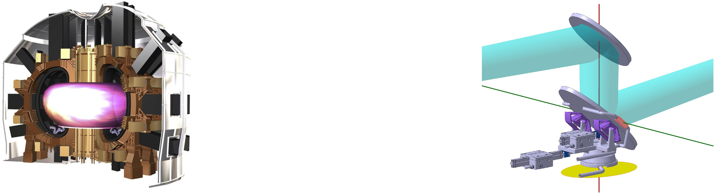

Tokamak Reactor Optimization

This project focused on the advanced thermomechanical optimization of mirror components operating inside a nuclear fusion Tokamak reactor.
Given the extreme thermal loads and radiation environment, the structural integrity and optical precision of the mirrors are critical. The work involved the implementation of piezoelectric actuators and advanced computational solvers (like the Rayleigh-Ritz method) to compensate for thermal deformations and optimize performance.
Tools and Technologies
- Simulation & Analysis: ANSYS Mechanical, MATLAB
- Key Concepts: Thermomechanics, Piezoelectric Actuators, Nuclear Fusion